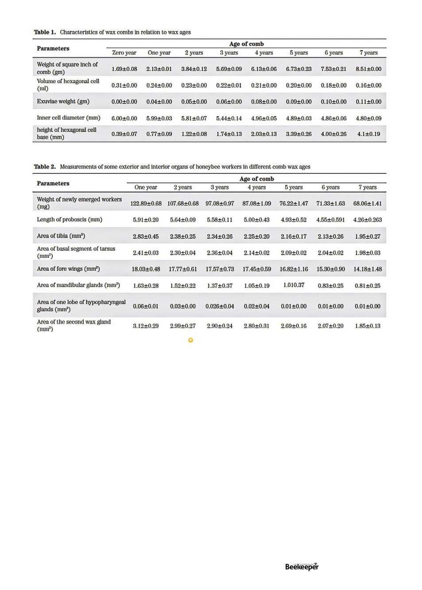

on 1 year old comb, and in order of increasing age
9.75, 6.00, and finally 5.25. The percentage of queens
successfully emerging also exactly corresponded to
comb age at 93.25%, 92.31%, 79.17% and 61.90%.
Queens from the young comb were fed two-and-a-half
times more royal jelly and were 24% bigger then queens
raised from the old comb (180mg vs 145mg). Numerous
specific organs of the queens were studied and other than
their diameter and hindwing size most of their organs
were significantly smaller when raised on older comb.
Significantly their ovarioles/ovaries and spermathecas
were much smaller, which would reduce their fertility. In
general a number of studies have shown a high degree
of correlation between size of queens and their quality
(Amiri et al., 2017; Delaney et al., 2011; Kahya et al.,
2008; Taha, 2005, 2013).
This last study is significant because it is a common
practice if one finds a hive to be queenless in the apiary to
just grab a comb with eggs from one’s best hive and put
it in the queenless hive for them to make a queen from.
As you can see from the above statistics though, unless
you grab comb that you know to be young (some people
mark the date of insertion on the topbar, otherwise
you’ll have to depend on your ability to judge comb age),
odds are you’re about to requeen with an inferior queen
from old comb! To avoid the risk of rearing an inferior
emergency queen it is probably better to either buy a
queen from a reputable breeder or at least graft an egg
into an artificial queen cup.
Shawar et al note “Nevertheless, many beekeepers
are reluctant to regularly replace old wax combs and
believe that such a practice is not economical because
a comb contains about 1200 g of wax, and because the
energy or resources required to construct a comb can be
tantamount to 7.5kg of honey (Seeley, 1985).” So what’s
one to do?
All the above studies looked at brood comb, the
reduction in quality in honey frames is probably marginal
by comparison, so cycle out brood combs, but don’t
stress so much about honey frames unless they are clearly
getting old and dark (in which case one begins to worry
about their attraction to pests and possible buildup of
any pesticides that have been in the environment).
Here is what I’ve been doing ever since in Bundaberg I
discovered how much small hive beetles love old comb,
and it also doubles as a measure to discourage swarming.
Every spring when I’m supering my hives I’ll remove the
outer two frames from the brood box and put them in
(Shawer 2020)
Vol. 126 | No. 01 |
Celebrating 125 years | 17